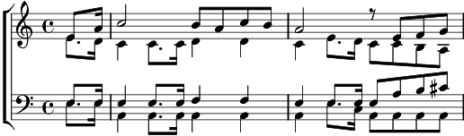

Enterrement d'une fourmi (l')
La mineur
Paroles: M. Rollinat
Musique: Vincent Girod

Les Fourmis sont en grand émoi :
L’âme du nid, la reine est morte !
Au bas d’une très vieille porte,
Sous un chêne, va le convoi.
Le vent cingle sur le sol froid
La nombreuse et fragile escorte.
Les fourmis sont en grand émoi :
L’âme du nid, la reine est morte !
Un tout petit je ne sais quoi
Glisse, tiré par la plus forte :
C’est le corbillard qui transporte
La défunte au caveau du roi.
Les Fourmis sont en grand émoi :
L’âme du nid, la reine est morte !
Au bas d’une très vieille porte,
Sous un chêne, va le convoi.